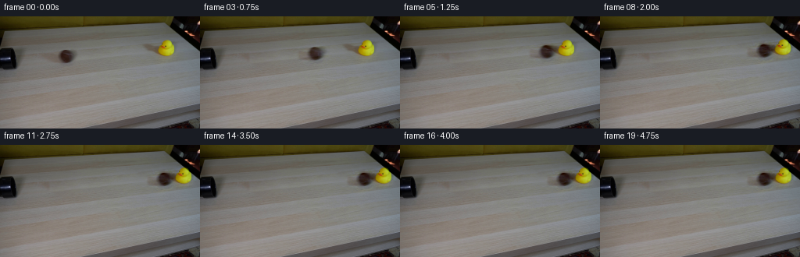
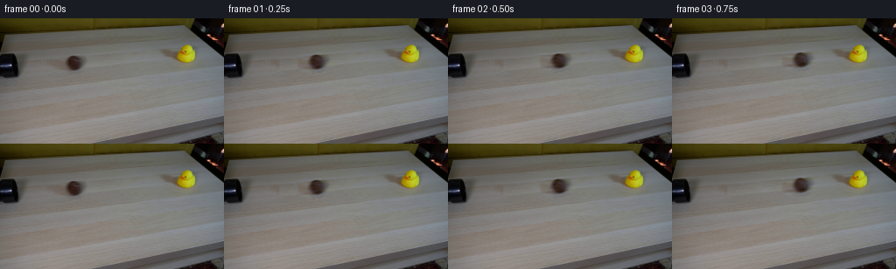
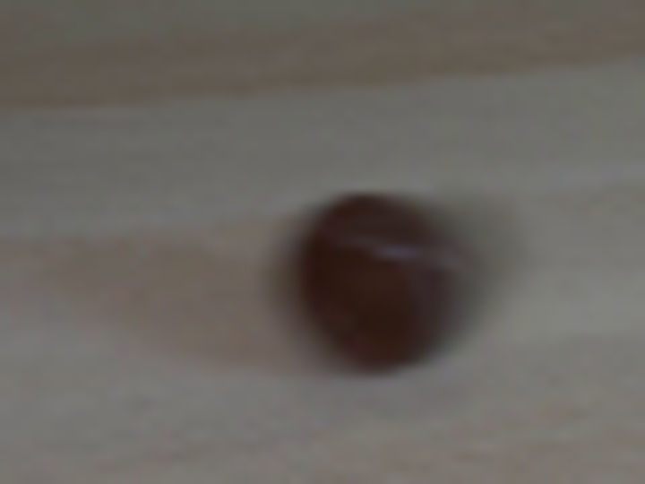
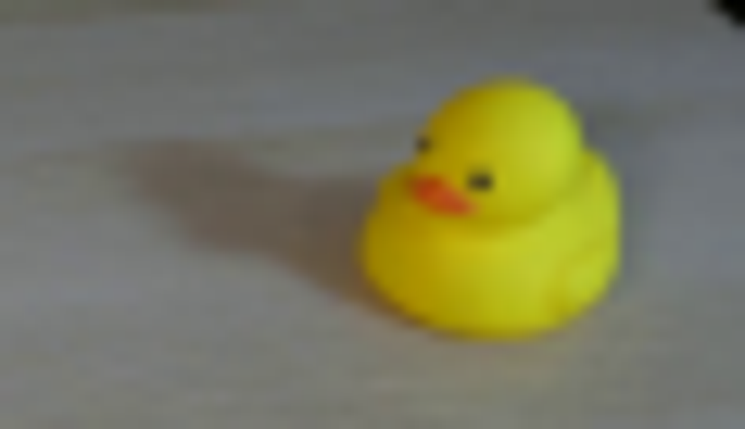
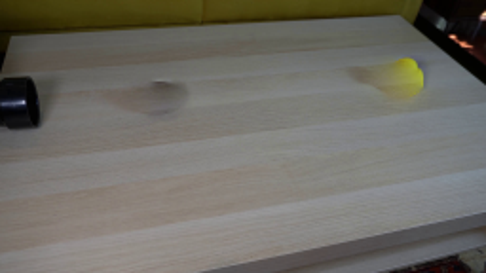
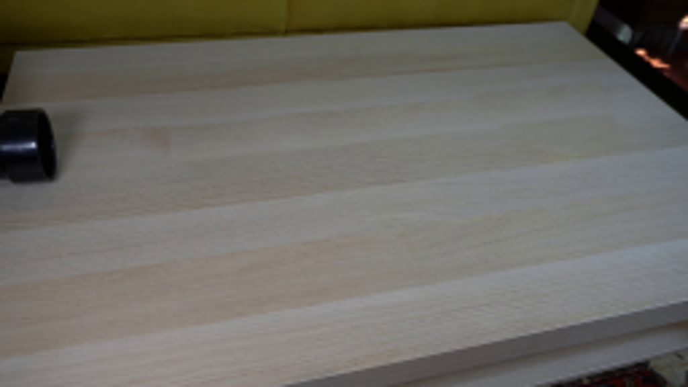
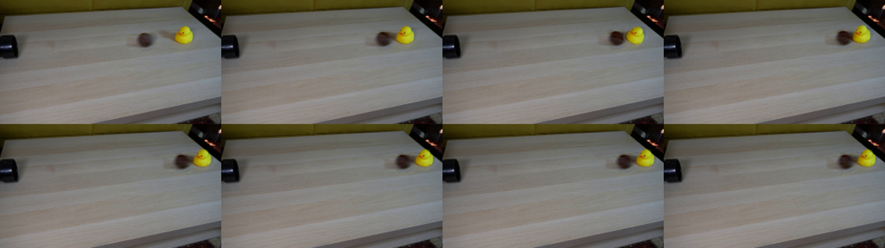
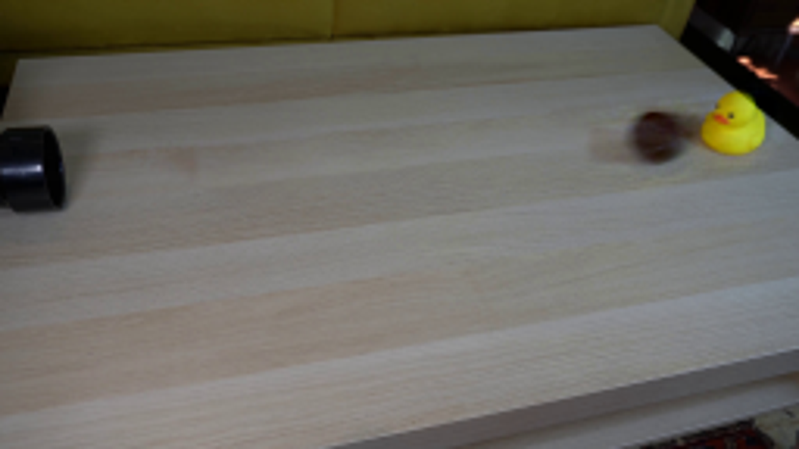

← 本轮 smoke 总览traex/GPT-6-Astra · 0007
vision-agent · 256×144 · 4.0 FPS · 20 帧 · 状态 failed · 输出 tokens 17359
原始任务Static locked-off single-shot with fixed frame throughout filmed with constant framerate in real-time. The scene shows a realistic scientific demonstration. The scene only contains the described setup and actions. A light beige coffee table with a small yellow rubber duck on it. A mustard yellow couch is in the background. There is a black pipe that points from the left side to the right side of the table. The brown tennis ball rolls straight out of the black pipe and hits the rubber duck.
当前保存结果
此结果可播放，但该运行尚未通过最终提交审核。页面展示不代表评测通过。
已保存候选与代码修改
这里按时间展示外部捕获的候选，每份均可单独播放。保存新版本不等于完成视觉检查；下方工具证据记录实际看过的图。
候选 01 · 2026-11-08T21:59:02.462527+00:00 · 点开播放与检查图
inspection.png

transition_check.png

代码变化
--- 上一保存版本
+++ 本次保存版本
@@ -0,0 +1,108 @@
+"""Locally reconstruct and animate the photographed tabletop demonstration."""
+from pathlib import Path
+import math
+import cv2
+import numpy as np
+from PIL import Image
+from artifact_io import save
+
+ROOT = Path(__file__).resolve().parent
+W,H=256,144
+Y,X=np.mgrid[:H,:W]
+
+
+def repair(img, vertices, delta):
+ """Continue neighboring wood grain under the moving foreground."""
+ hard=np.zeros((H,W),np.uint8)
+ cv2.fillPoly(hard,[np.array(vertices,np.int32)],255)
+ a=np.clip(cv2.distanceTransform(hard,cv2.DIST_L2,5)/3,0,1)
+ dx,dy=delta
+ donor=cv2.remap(img,(X+dx).astype(np.float32),(Y+dy).astype(np.float32),cv2.INTER_LINEAR,borderMode=cv2.BORDER_REFLECT)
+ ring=(cv2.dilate(hard,np.ones((7,7),np.uint8))>0)&(hard==0)
+ cx,cy=np.mean(X[hard>0]),np.mean(Y[hard>0])
+ feats=np.stack([np.ones_like(X),(X-cx)/30,(Y-cy)/20],axis=-1)
+ coef=np.linalg.lstsq(feats[ring],(img-donor)[ring],rcond=None)[0]
+ donor+=feats@coef
+ return (img*(1-a[...,None])+donor*a[...,None]).astype(np.float32)
+
+
+def warp(layer,dx=0,dy=0,angle=0,pivot=(0,0),scale=1):
+ mat=cv2.getRotationMatrix2D(pivot,angle,scale)
+ mat[:,2]+=[dx,dy]
+ return cv2.warpAffine(layer,mat,(W,H),flags=cv2.INTER_CUBIC,borderMode=cv2.BORDER_CONSTANT)
+
+
+def main():
+ source=np.array(Image.open(ROOT/'first_frame.png').convert('RGB'))
+ im=source.astype(np.float32)
+ # Replacement areas include both objects' original soft cast shadows.
+ ballpoly=[(62,41),(77,37),(93,38),(103,44),(103,58),(95,65),(74,66),(62,59)]
+ duckpoly=[(175,33),(186,31),(201,31),(205,25),(219,25),(227,34),(230,48),(222,56),(204,57),(191,49),(180,43)]
+ no_ball=repair(im,ballpoly,(46,-4.8))
+ background=repair(no_ball,duckpoly,(-53,6.5))
+ ball=im-no_ball
+ duck=no_ball-background
+
+ # A broad foreground support isolates the rubber toy from its real shadow.
+ chroma=im[:,:,1]-im[:,:,2]
+ support=((chroma>37)&(X>199)&(X<226)&(Y>28)&(Y<53)).astype(np.uint8)
+ contours,_=cv2.findContours(support,cv2.RETR_EXTERNAL,cv2.CHAIN_APPROX_SIMPLE)
+ duckmask=np.zeros((H,W),np.uint8)
+ cv2.drawContours(duckmask,contours,-1,1,-1)
+ duckmask=cv2.dilate(duckmask,np.ones((3,3),np.uint8))
+ duckmask=cv2.GaussianBlur(duckmask.astype(np.float32),(0,0),.55)
+ duckbody=duck*duckmask[...,None]
+ duckshadow=duck-duckbody
+
+ # Keep the measured low-frequency illumination on the tennis ball fixed;
+ # transport its fine felt and pale seam detail as its surface rolls.
+ bc=(85.0,50.9)
+ br=8.25
+ core=np.clip((1-((X-bc[0])/7.45)**2-((Y-bc[1])/7.55)**2)*3,0,1).astype(np.float32)
+ low=cv2.GaussianBlur(im,(0,0),1.15)
+ detail=(im-low)*core[...,None]
+
+ # Fixed-time, constant-frame-rate physics, with a lightly inelastic impact.
+ xcontact=195.0
+ speed=86.0
+ rolling_drag=6.0
+ tc=(speed-math.sqrt(speed*speed-2*rolling_drag*(xcontact-bc[0])))/rolling_drag
+ slope=-0.057
+ def pos(t):
+ if t<=tc:
+ bdx=speed*t-.5*rolling_drag*t*t
+ return bdx,0.,0.
+ u=t-tc
+ # A lighter rubber duck is propelled faster and farther than the ball.
+ tb=min(u,.65)
+ td=min(u,.80)
+ bdx=xcontact-bc[0]+48*tb-.5*(48/.65)*tb*tb
+ ddx=55*td-.5*(55/.80)*td*td
+ lean=29*math.exp(-3.25*u)*math.sin(9.5*u)
+ return bdx,ddx,lean
+
+ def render(t):
+ bdx,ddx,lean=pos(max(t,0))
+ body=warp(duckbody,ddx,slope*ddx,-lean,(212.,49.5))
+ # Shadow stays on the horizontal table, not rigidly attached to the tilt.
+ shadow=warp(duckshadow,ddx+lean*.035,slope*ddx,0)
+ scene=background+shadow+body
+ # Approximately one revolution per circumference of travel.
+ theta=-math.degrees(bdx/br)
+ spun=warp(detail,angle=theta,pivot=bc)
+ moving_ball=ball+(spun-detail)*.74*core[...,None]
+ scene+=warp(moving_ball,bdx,slope*bdx)
+ return np.clip(scene,0,255)
+
+ frames=[source]
+ for i in range(1,20):
+ t=i/4
+ # Short camera exposure preserves the photographed motion-softness.
+ samples=[render(t+dt) for dt in [-.012,-.006,0,.006,.012]]
+ frames.append(np.clip(np.mean(samples,axis=0),0,255).round().astype(np.uint8))
+ frames=np.stack(frames)
+ save(frames,ROOT)
+ Image.fromarray(np.uint8(np.clip(background,0,255))).save(ROOT/'.tmp'/'background.png')
+
+if __name__=='__main__':
+ main()
可观测工具行为
命令 1 · 2026-11-08T21:50:26.081164+00:00/bin/bash -lc "ls -la && cat prompt.txt && printf '\\n---RULES---\\n' && cat GENERATION_RULES.md"
exit 0 命令 2 · 2026-11-08T21:50:32.537828+00:00/bin/bash -lc "cat artifact_io.py && python - <<'PY'
from PIL import Image
im=Image.open('first_frame.png');print(im.size)
im.resize((1024,576)).save('.tmp/enlarged.png')
PY"exit 0 命令 3 · 2026-11-08T21:51:02.886287+00:00/bin/bash -lc "python - <<'PY'
import cv2, numpy as np
print('opencv',cv2.__version__)
from PIL import Image
im=Image.open('first_frame.png')
im.crop((50,25,110,70)).resize((720,540)).save('.tmp/ball.png')
im.crop((174,24,233,58)).resize((826,476)).save('.tmp/duck.png')
PY"exit 0 命令 4 · 2026-11-08T21:51:51.130209+00:00/bin/bash -lc "python - <<'PY'
from PIL import Image
im=Image.open('first_frame.png')
im.resize((1536,864)).save('.tmp/big.png')
import numpy as np
x=np.array(im)
print(x[51,85], x[51,81],x[51,89],x[47,85],x[55,85])
PY"exit 0 命令 5 · 2026-11-08T21:54:59.136208+00:00/bin/bash -lc "cat > .tmp/experiment.py <<'PY'
import numpy as np, cv2
from PIL import Image
im=np.array(Image.open('first_frame.png'))
h,w=im.shape[:2]
y,x=np.mgrid[:h,:w]
# removal masks over object+shadow
ball_mask=(((x-82)/20)**2+((y-51)/12)**2<1).astype(np.uint8)*255
duck_mask=np.zeros((h,w),np.uint8)
cv2.fillPoly(duck_mask,[np.array([[181,35],[198,33],[207,28],[217,28],[224,37],[225,49],[216,54],[203,53],[194,47],[181,42]])],255)
mask=np.maximum(ball_mask,duck_mask)
bg=cv2.inpaint(im,mask,3,cv2.INPAINT_TELEA)
Image.fromarray(bg).resize((1024,576)).save('.tmp/bg_inpaint.png')
# use seamless clone source shifted along grain
bg=im.copy()
for region,dx,dy in [(ball_mask,49,-5),(duck_mask,-55,6)]:
donor=cv2.warpAffine(im,np.array([[1,0,-dx],[0,1,-dy]],float),(w,h),borderMode=cv2.BORDER_REFLECT)
xx,yy,ww,hh=cv2.boundingRect(region)
bg=cv2.seamlessClone(donor,bg,region,(xx+ww//2,yy+hh//2),cv2.NORMAL_CLONE)
Image.fromarray(bg).resize((1024,576)).save('.tmp/bg_clone.png')
Image.fromarray(bg).save('.tmp/bg.png')
PY
python .tmp/experiment.py"exit 0 命令 6 · 2026-11-08T21:56:06.805731+00:00/bin/bash -lc "python - <<'PY'
import numpy as np
from PIL import Image
im=np.array(Image.open('first_frame.png')).astype(float)
d=im[:,:,1]-im[:,:,2]
for y in range(28,54):
print('%2d'%y,''.join(' ' if d[y,x]<25 else '.' if d[y,x]<55 else '+' if d[y,x]<100 else '#' for x in range(199,226)))
PY"exit 0 命令 7 · 2026-11-08T21:56:52.092914+00:00/bin/bash -lc "cat > .tmp/test_background.py <<'PY'
import cv2,numpy as np
from PIL import Image
im=np.array(Image.open('first_frame.png')).astype(np.float32)
y,x=np.mgrid[:144,:256]
def clean(img, vertices, delta):
hard=np.zeros((144,256),np.uint8)
cv2.fillPoly(hard,[np.array(vertices)],255)
# feather fully inside the supplied exclusion
alpha=np.clip(cv2.distanceTransform(hard,cv2.DIST_L2,5)/3,0,1)
dx,dy=delta
donor=cv2.remap(img,(x+dx).astype('float32'),(y+dy).astype('float32'),cv2.INTER_LINEAR,borderMode=cv2.BORDER_REFLECT)
ring=(cv2.dilate(hard,np.ones((7,7),np.uint8))>0)&(hard==0)
cx,cy=np.mean(x[hard>0]),np.mean(y[hard>0])
features=np.stack([np.ones_like(x),(x-cx)/30,(y-cy)/20],axis=-1)
coef=np.linalg.lstsq(features[ring],(img-donor)[ring],rcond=None)[0]
donor+=features@coef
return img*(1-alpha[...,None])+donor*alpha[...,None],alpha
ballpoly=[(62,41),(77,37),(93,38),(103,44),(103,58),(95,65),(74,66),(62,59)]
duckpoly=[(175,33),(186,31),(201,31),(205,25),(219,25),(227,34),(230,48),(222,56),(204,57),(191,49),(180,43)]
b1,a1=clean(im,ballpoly,(46,-4.8))
b2,a2=clean(b1,duckpoly,(-53,6.5))
Image.fromarray(np.uint8(np.clip(b2,0,255))).save('.tmp/bg2.png')
Image.fromarray(np.uint8(np.clip(b2,0,255))).resize((1024,576)).save('.tmp/bg2big.png')
PY
python .tmp/test_background.py"exit 0 命令 8 · 2026-11-08T21:57:36.263995+00:00/bin/bash -lc "python - <<'PY'
from PIL import Image
import numpy as np
im=np.array(Image.open('first_frame.png'))
for y in [44,46,48,50,52,54,56,58]:
print(y,[(x,im[y,x].tolist()) for x in [78,81,84,87,90,93]])
PY"exit 0 命令 9 · 2026-11-08T21:59:01.186558+00:00/bin/bash -lc "cat > generate.py <<'PY'
\"\"\"Locally reconstruct and animate the photographed tabletop demonstration.\"\"\"
from pathlib import Path
import math
import cv2
import numpy as np
from PIL import Image
from artifact_io import save
ROOT = Path(__file__).resolve().parent
W,H=256,144
Y,X=np.mgrid[:H,:W]
def repair(img, vertices, delta):
\"\"\"Continue neighboring wood grain under the moving foreground.\"\"\"
hard=np.zeros((H,W),np.uint8)
cv2.fillPoly(hard,[np.array(vertices,np.int32)],255)
a=np.clip(cv2.distanceTransform(hard,cv2.DIST_L2,5)/3,0,1)
dx,dy=delta
donor=cv2.remap(img,(X+dx).astype(np.float32),(Y+dy).astype(np.float32),cv2.INTER_LINEAR,borderMode=cv2.BORDER_REFLECT)
ring=(cv2.dilate(hard,np.ones((7,7),np.uint8))>0)&(hard==0)
cx,cy=np.mean(X[hard>0]),np.mean(Y[hard>0])
feats=np.stack([np.ones_like(X),(X-cx)/30,(Y-cy)/20],axis=-1)
coef=np.linalg.lstsq(feats[ring],(img-donor)[ring],rcond=None)[0]
donor+=feats@coef
return (img*(1-a[...,None])+donor*a[...,None]).astype(np.float32)
def warp(layer,dx=0,dy=0,angle=0,pivot=(0,0),scale=1):
mat=cv2.getRotationMatrix2D(pivot,angle,scale)
mat[:,2]+=[dx,dy]
return cv2.warpAffine(layer,mat,(W,H),flags=cv2.INTER_CUBIC,borderMode=cv2.BORDER_CONSTANT)
def main():
source=np.array(Image.open(ROOT/'first_frame.png').convert('RGB'))
im=source.astype(np.float32)
# Replacement areas include both objects' original soft cast shadows.
ballpoly=[(62,41),(77,37),(93,38),(103,44),(103,58),(95,65),(74,66),(62,59)]
duckpoly=[(175,33),(186,31),(201,31),(205,25),(219,25),(227,34),(230,48),(222,56),(204,57),(191,49),(180,43)]
no_ball=repair(im,ballpoly,(46,-4.8))
background=repair(no_ball,duckpoly,(-53,6.5))
ball=im-no_ball
duck=no_ball-background
# A broad foreground support isolates the rubber toy from its real shadow.
chroma=im[:,:,1]-im[:,:,2]
support=((chroma>37)&(X>199)&(X<226)&(Y>28)&(Y<53)).astype(np.uint8)
contours,_=cv2.findContours(support,cv2.RETR_EXTERNAL,cv2.CHAIN_APPROX_SIMPLE)
duckmask=np.zeros((H,W),np.uint8)
cv2.drawContours(duckmask,contours,-1,1,-1)
duckmask=cv2.dilate(duckmask,np.ones((3,3),np.uint8))
duckmask=cv2.GaussianBlur(duckmask.astype(np.float32),(0,0),.55)
duckbody=duck*duckmask[...,None]
duckshadow=duck-duckbody
# Keep the measured low-frequency illumination on the tennis ball fixed;
# transport its fine felt and pale seam detail as its surface rolls.
bc=(85.0,50.9)
br=8.25
core=np.clip((1-((X-bc[0])/7.45)**2-((Y-bc[1])/7.55)**2)*3,0,1).astype(np.float32)
low=cv2.GaussianBlur(im,(0,0),1.15)
detail=(im-low)*core[...,None]
# Fixed-time, constant-frame-rate physics, with a lightly inelastic impact.
xcontact=195.0
speed=86.0
rolling_drag=6.0
tc=(speed-math.sqrt(speed*speed-2*rolling_drag*(xcontact-bc[0])))/rolling_drag
slope=-0.057
def pos(t):
if t<=tc:
bdx=speed*t-.5*rolling_drag*t*t
return bdx,0.,0.
u=t-tc
# A lighter rubber duck is propelled faster and farther than the ball.
tb=min(u,.65)
td=min(u,.80)
bdx=xcontact-bc[0]+48*tb-.5*(48/.65)*tb*tb
ddx=55*td-.5*(55/.80)*td*td
lean=29*math.exp(-3.25*u)*math.sin(9.5*u)
return bdx,ddx,lean
def render(t):
bdx,ddx,lean=pos(max(t,0))
body=warp(duckbody,ddx,slope*ddx,-lean,(212.,49.5))
# Shadow stays on the horizontal table, not rigidly attached to the tilt.
shadow=warp(duckshadow,ddx+lean*.035,slope*ddx,0)
scene=background+shadow+body
# Approximately one revolution per circumference of travel.
theta=-math.degrees(bdx/br)
spun=warp(detail,angle=theta,pivot=bc)
moving_ball=ball+(spun-detail)*.74*core[...,None]
scene+=warp(moving_ball,bdx,slope*bdx)
return np.clip(scene,0,255)
frames=[source]
for i in range(1,20):
t=i/4
# Short camera exposure preserves the photographed motion-softness.
samples=[render(t+dt) for dt in [-.012,-.006,0,.006,.012]]
frames.append(np.clip(np.mean(samples,axis=0),0,255).round().astype(np.uint8))
frames=np.stack(frames)
save(frames,ROOT)
Image.fromarray(np.uint8(np.clip(background,0,255))).save(ROOT/'.tmp'/'background.png')
if __name__=='__main__':
main()
PY
python generate.py"exit 0 命令 10 · 2026-11-08T21:59:44.462295+00:00/bin/bash -lc "python - <<'PY'
from PIL import Image,ImageDraw
im=Image.new('RGB',(256*4,144*2))
for j,i in enumerate(range(4,12)):
im.paste(Image.open(f'frames/{i:02}.png'),((j%4)*256,(j//4)*144))
im.resize((1536,432)).save('.tmp/impact.png')
PY"exit 0 命令 11 · 2026-11-08T21:59:58.967958+00:00/bin/bash -lc "python - <<'PY'
from PIL import Image
Image.open('frames/09.png').resize((1024,576)).save('.tmp/f9.png')
PY"exit 0 命令 12 · 2026-11-08T22:00:31.779765+00:00/bin/bash -lc "python - <<'PY'
from pathlib import Path
from PIL import Image
import numpy as np
first=np.array(Image.open('first_frame.png').convert('RGB'))
frames=np.stack([np.array(Image.open(p)) for p in sorted(Path('frames').glob('*.png'))])
assert frames.shape==(20,144,256,3) and frames.dtype==np.uint8
assert np.array_equal(frames[0],first)
a=np.load('pixels.npz')['pixels'];assert a.shape==(144,256,20)
print('Validated 20 RGB frames, 256Ã144; first frame identical.')
PY"exit 0 视觉工具实际返回图片 1

视觉工具实际返回图片 2

视觉工具实际返回图片 3

视觉工具实际返回图片 4
视觉工具实际返回图片 5

视觉工具实际返回图片 6

视觉工具实际返回图片 7

视觉工具实际返回图片 8

视觉工具实际返回图片 9

保存候选 1 份；完成命令 12 次；可验证图片返回 9 张。原始 API 响应与完整日志保留在本地。